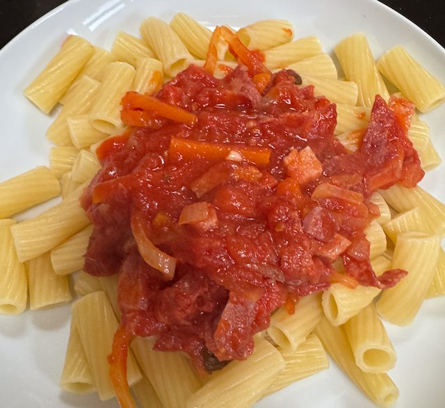

Bacon and Salami Pasta

Serves: 4
Cook Time: 1 hour
Ingredients
- 25g butter
- 1 onion, thinly sliced
- 1 carrot, cut into strips
- 1 400g tin chopped tomatoes
- 1 chicken stock pot
- 1 bay leaf
- 2-3 sprigs fresh oregano
- 1 220g pack bacon, sliced
- 2 85g pack salami, sliced
Method
Sauce. Gently fry the onion in butter until softened. Add the carrot and fry some more. Then add tomatoes, stock pot, bay leaf and oregano. Bring to the simmer.
Meanwhile prepare bacon and salami. Heat frying pan to medium hot. Add bacon and fry until browning. Then add salami and fry some more.
Add bacon and salami to the sauce. Deglaze the bacon pan with water and add to the sauce.
Taste for salt, though you will probably not need to add any.